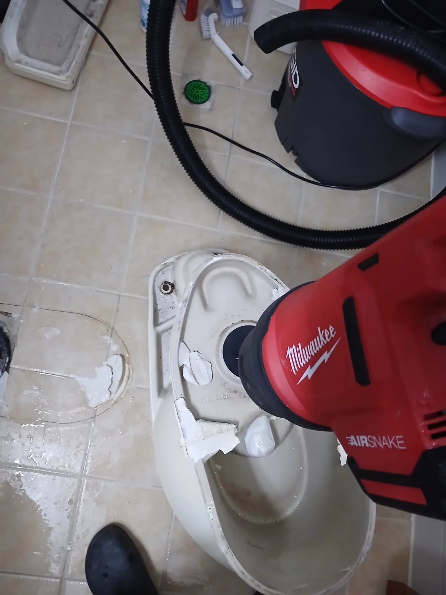

동대문구 이문동 변기막힘, 현장 도착 후 진단
동대문구 이문동에서 변기가 제대로 내려가지 않는다는 요청을 받고 신속하게 현장으로 출동했습니다.
변기막힘은 겉으로 보이는 증상이 비슷하더라도 변기 자체의 트랩에 이물질이 걸린 경우와 변기 아래 오수관에서 문제가 발생한 경우에 따라 작업 방법이 달라집니다. 따라서 무조건 한 가지 장비를 반복하기보다 실제 막힘 위치와 상태를 판단해 적합한 공법을 선택하는 것이 중요합니다.
신라건축설비는 변기막힘·싱크대막힘·하수구막힘을 전문적으로 처리해 온 숙련 기술자가 현장 상태를 점검하고, 석션·관통·탈거 등 필요한 작업 방법을 단계적으로 선택합니다.
이번 이문동 변기막힘 현장 역시 먼저 비교적 비파괴적인 방법으로 해결 가능 여부를 확인한 뒤, 증상이 해소되지 않는 것을 확인하고 다음 단계 작업으로 전환했습니다.
1단계: 증상 확인과 필요한 장비 작업
먼저 전문 석션 장비의 호스를 변기 내부에 밀착시켜 강한 흡입력으로 막힘을 제거하는 작업을 진행했습니다.
하지만 석션 작업 후에도 정상적인 통수 상태가 확보되지 않았습니다. 이처럼 강한 흡입에도 이물질이 움직이지 않는 경우에는 변기 내부의 굴곡진 트랩 구간에 이물질이 단단하게 걸려 있을 가능성을 확인해야 합니다.
같은 작업을 무리하게 반복하기보다 현장 상태를 다시 판단하고 변기를 탈거해 내부에 직접 접근하는 방식으로 작업 범위를 변경했습니다.

2단계: 원인 구간 처리와 정상 작동 확인
변기 주변 마감부를 정리한 뒤 변기를 안전하게 탈거하고 변기 하부와 오수관 입구 상태를 확인했습니다.
이후 Milwaukee AirSnake 에어건을 이용해 변기 내부 통로에 압력을 전달하는 작업을 진행했습니다. 작업 과정에서 내부에 걸려 있던 다량의 이물질이 실제로 제거됐습니다.
단순히 순간적으로 물길만 확보하는 데 그치지 않고 막힘을 일으키고 있던 이물질을 제거한 뒤 변기를 원위치에 재설치했습니다.
변기 자체의 막힘뿐 아니라 하부 오수관 문제까지 의심되는 경우에는 변기 탈거 후 배관 상태를 구분해 진단할 수 있어, 단순 통수 작업으로 끝내지 않고 실제 막힘 위치에 맞춰 대응하는 것이 중요합니다.

작업 결과와 재발 방지 안내
변기 내부에 걸려 있던 이물질을 제거한 뒤 배수 및 통수 상태를 확인하고 정상적으로 사용할 수 있도록 작업을 마무리했습니다.
변기막힘은 같은 증상이라도 막힘 위치와 원인에 따라 석션만으로 해결되는 경우와 변기 탈거까지 필요한 경우가 다릅니다. 일반적인 작업을 반복해도 해결되지 않는다면 무리하게 압력만 가하기보다 변기 내부와 하부 오수관을 구분해 진단하는 것이 중요합니다.
물티슈, 청소포, 위생용품이나 변기 트랩을 통과하기 어려운 이물질은 변기에 버리지 않는 것이 좋습니다. 반복적으로 배수가 느려지거나 물이 차오르는 증상이 나타난다면 무리하게 자가 작업을 반복하기보다 내부 이물질이나 오수관 상태를 점검하는 것이 재발 방지에 도움이 됩니다.
신라건축설비는 서울·경기 지역의 변기막힘 현장에 신속하게 출동하며 단순 석션 작업부터 변기 탈거, 전문 에어건 작업과 오수관 점검까지 현장 상태에 맞춰 대응합니다. 작업 전 필요한 작업 범위와 비용을 안내하고, 불필요한 작업을 추가하기보다 실제 막힘 상태에 맞는 해결 방법을 선택해 작업하고 있습니다.
최종 조치: 석션 작업 후에도 남아 있던 막힘을 해결하기 위해 변기를 탈거하고 Milwaukee AirSnake 에어건을 이용해 변기 내부 통로에 걸린 이물질을 제거했습니다. 이후 변기를 다시 설치하고 통수 상태를 확인해 작업을 마무리했습니다.
현장 방문 전 확인하는 비용과 작업 범위
신라건축설비는 현장 증상과 배관 구조를 확인한 뒤 필요한 작업과 예상 비용을 안내합니다. 단순 관통으로 해결되는지, 배관내시경·석션·고압세척 또는 변기 탈거가 필요한지는 현장 상태에 따라 달라집니다. 출장비와 야간 작업비, 추가 장비 비용이 발생할 수 있는 경우 작업 전에 먼저 설명하고 동의를 받은 범위에서 진행합니다.
업체를 선택할 때 확인할 사항
무조건적인 ‘0원’ 표현보다 실제 작업 범위, 추가 비용 조건, 사용 장비와 사후 대응 기준을 확인하는 것이 중요합니다. 해결되지 않았을 때의 비용 기준과 작업 후 동일 증상 발생 시 점검 범위를 사전에 문의해두면 불필요한 분쟁을 줄일 수 있습니다.
동대문구 변기막힘 자주 묻는 질문
변기막힘은 왜 반복되나요?
동대문구 이문동 현장처럼 변기 물이 원활하게 내려가지 않는 막힘 증상이 발생한 현장이었습니다. 변기막힘은 휴지나 오물처럼 비교적 쉽게 제거되는 경우도 있지만, 변기 내부의 굴곡진 트랩 깊숙한 곳에 이물질이 걸리면 일반적인 압력 작업이나 석션만으로 해결되지 않을 수 있습니다. 증상은 원인이 현장마다 다를 수 있습니다. 변기 내부 이물질뿐 아니라 하부 오수관 막힘이나 배관 상태 때문에 반복될 수 있습니다. 같은 변기막힘이 재발하면 막힌 위치와 원인을 다시 확인하는 것이 중요합니다.
변기 물이 안 내려가거나 역류하면 변기뚫는업체를 불러야 하나요?
물이 천천히 내려가거나 수위가 차오르고 변기역류가 반복되면 단순 뚫어뻥보다 전문 장비 점검이 필요한 경우가 있습니다. 현장에서는 증상과 배관 구조를 먼저 확인합니다.
변기 이물질 막힘은 변기를 탈거해야 하나요?
물티슈·청소포·플라스틱·음식물처럼 변기 트랩에 걸린 이물질은 위치에 따라 변기 탈거가 필요할 수 있습니다. 무조건 탈거하지 않고 먼저 막힘 위치를 판단합니다.
변기뚫는업체는 어떤 장비로 작업하나요?
현장 상태에 따라 석션, 에어건, 배관내시경, 변기 탈거 등을 사용합니다. 하부 오수관 문제라면 변기만 뚫는 작업보다 배관 구간 확인이 중요합니다.
변기막힘 비용은 어떻게 정해지나요?
단순 관통인지, 이물질 제거와 변기 탈거가 필요한지, 오수관이나 공용배관 작업이 필요한지에 따라 달라집니다. 추가 장비나 작업이 필요하면 진행 전에 범위와 비용을 안내합니다.
변기에서 냄새가 나거나 물이 자주 차오르는 것도 막힘과 관련 있나요?
악취나 수위 이상이 항상 막힘 때문인 것은 아니지만 배수 불량, 오수관 상태, 연결부 문제와 함께 나타날 수 있습니다. 반복되면 현장 점검으로 원인을 구분해야 합니다.
변기막힘 서울·경기 출동지역
신라건축설비는 동대문구 이문동 현장을 포함해 서울 25개 구와 경기도 31개 시·군의 배관 문제를 상담합니다. 현장 거리와 기사 배정 상황에 따라 출동 가능 여부를 먼저 안내드립니다.
서울 전 지역
강남구 · 강동구 · 강북구 · 강서구 · 관악구 · 광진구 · 구로구 · 금천구 · 노원구 · 도봉구 · 동대문구 · 동작구 · 마포구 · 서대문구 · 서초구 · 성동구 · 성북구 · 송파구 · 양천구 · 영등포구 · 용산구 · 은평구 · 종로구 · 중구 · 중랑구
경기도 주요 출동지역
수원시 · 용인시 · 고양시 · 화성시 · 성남시 · 부천시 · 남양주시 · 안산시 · 평택시 · 안양시 · 시흥시 · 파주시 · 김포시 · 의정부시 · 광주시 · 하남시 · 광명시 · 군포시 · 양주시 · 오산시 · 이천시 · 안성시 · 구리시 · 의왕시 · 포천시 · 양평군 · 여주시 · 동두천시 · 과천시 · 가평군 · 연천군